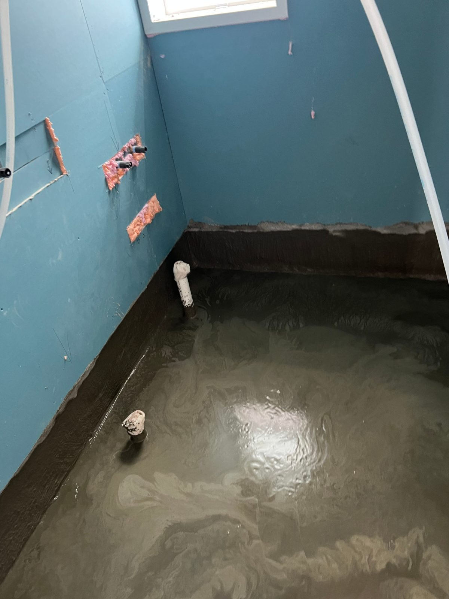
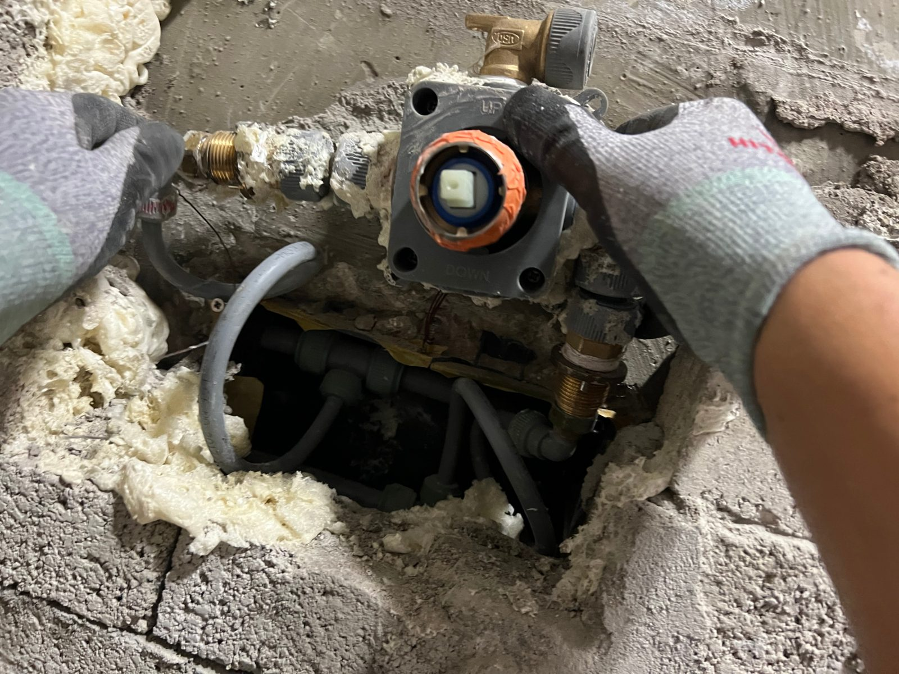

세종 카페 화장실 도막방수 3차 — 방수면과 매립수전 연결부 살펴보기

작업 핵심
현장 작업 한눈에 보기
- 현장
- 세종 카페 화장실
- 문제
- 타일 전 방수·설비 작업
- 작업
- 현장 기록상 3차 도막방수
사진은 방수면·매립수전 - 결과
- 마감 전 공정 기록
환풍기·완공·시험 사진 없음
세종 카페 화장실에서 도막방수 3차와 난방·환풍기 배관 작업을 진행했습니다. 이번 글에서는 실제 사진이 남은 바닥·벽 하단 방수면과 매립수전 연결부를 소개합니다.
카페 화장실, 마감 전 바닥부터 보겠습니다
안녕하세요. 만물인테리어입니다. 세종의 한 카페 화장실에서 진행한 도막방수 작업입니다.
현장 공정에는 도막방수 3차와 난방·환풍기 배관 작업이 함께 남아 있습니다. 첫 사진에서는 바닥과 벽 하단의 도포 범위를 볼 수 있습니다.

바닥 배관이 나오는 자리도 남겨 둡니다
도포면 사이로 바닥 배관이 올라오는 위치가 보입니다. 배관 주변과 벽 모서리를 한 화면에 담으면 다음 공정에서 참고할 수 있습니다.
기구가 설치되면 가려질 부분이지만, 지금은 배관 자리와 바닥의 관계를 한눈에 볼 수 있습니다.
벽 안쪽에서는 수전 연결 작업이 이어졌습니다
두 번째 사진은 환풍기 배관이 아니라 매립수전 몸체와 급수 연결부를 손보는 장면입니다. 벽을 연 자리에서 부속의 위치와 연결 방향을 볼 수 있습니다.
이처럼 전체 공정 이름과 사진 속 세부 작업을 나눠 보시면 욕실 안에서 무엇을 했는지 이해하기 쉽습니다.

상가 화장실 일정은 마감만 보고 정하지 않습니다
방수처럼 재료별 대기 시간이 필요한 공정은 다음 작업과 간격을 두어야 합니다. 영업 일정과 함께 조율할 부분입니다.
화장실을 언제부터 사용해야 하는지 미리 알려 주시면, 필요한 공정과 확인 항목을 나눠 상담할 수 있습니다.